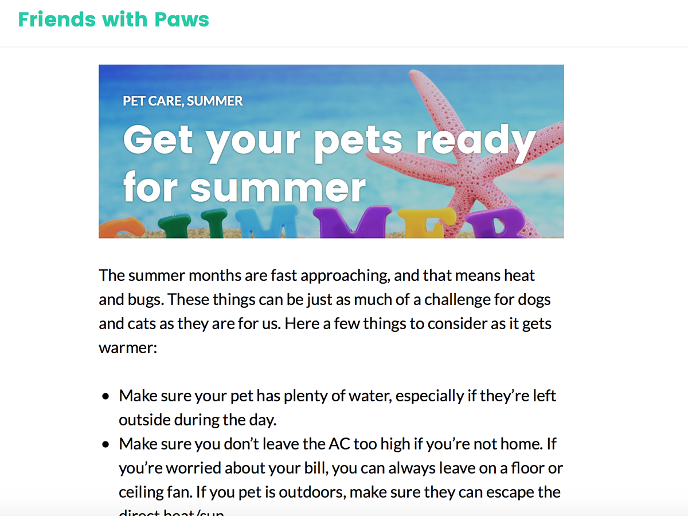
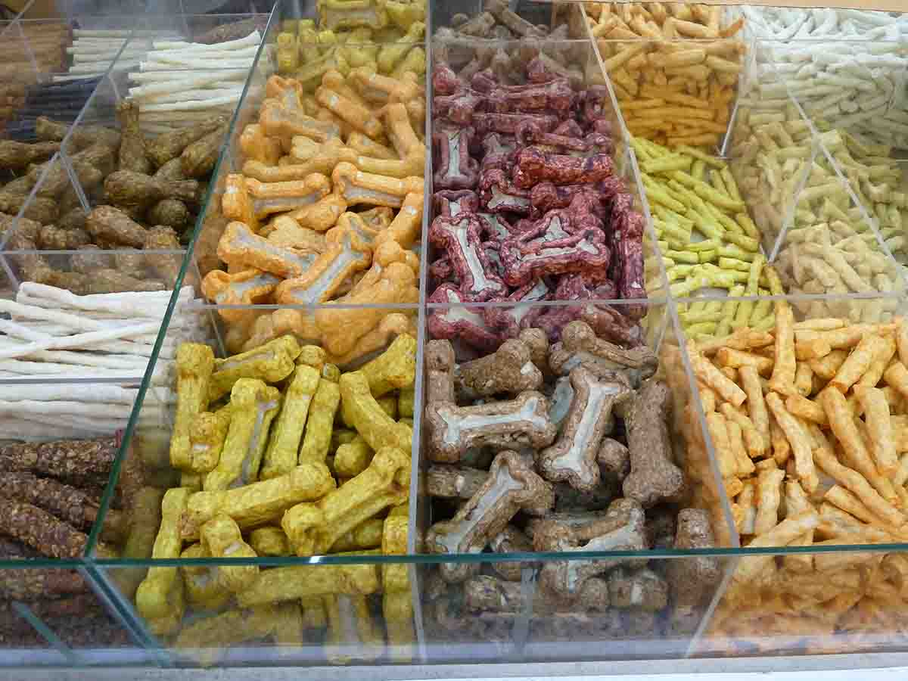

News
The blog is up!
Our blog is finally up and running. We’ll be up-dating 2-3 times a week with posts from our fun and dedicated staff. Topics will range from health concerns to training tips to (pet) life hacks.
We are very excited to have added a blog to our social media presence. It will be a great way to connect with the community and provide a source of reliable information. We know there are a lot of websites out there, and we want to give accurate information in regards to dog breeds, pet care, and training.
Have a question or blog suggestion? Send us an email. We look forward to hearing from you.
Donations needed
The shelter is partnering with some other shelters in county and we are in need of some pet supplies. We'll be transporting them to the appropriate shelters, so all you would need to do is drop off your donation at our front desk. These donations are eligible for a tax write off, so bring them in before April 18.
Items needed:
- Dog food: Purina adult and Purina puppy
- Cat food: Purina adult and Purina cat
- Bedding: new or lightly used and clean
- Hamster and Rabbit food
- Food bowls
Easter contest!
It's that time of year, so let's celebrate!
From March 1 to April 16, we'll be hosting an Easter picture contest. The winner will get a $50 gift card to T.G.I. Friday's.
To participate, make sure you're following us on Facebook or Twitter. Take a picture of your pet celebrating Easter (baskets, bunny ears, eggs, whatever else) and post to our page on either platform. Make sure to tag us (@FriendswPaws) and use the hashtag "#EasterPets" so we see your entry.
The contest ends at midnight on April 16. Winners will be announced the week of April 23.
P.S. Even the bunnies should be decked out!